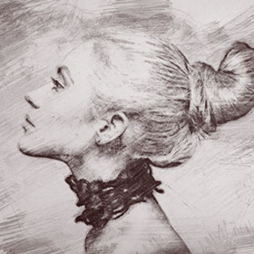
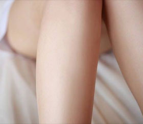
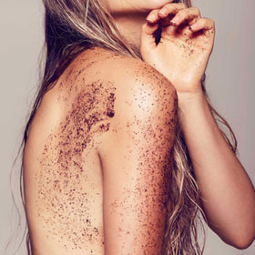
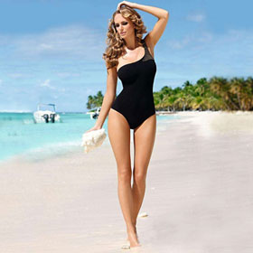
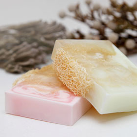

Правильно говорить реснички, а не волосы. Но не будем умничать, «волосы» как-то понятней.
Убрать волосы из носа можно и поверьте это не адская боль, все терпимо (мне совсем не больно).
Но!!! Должна предупредить, что данные волоски защищают нас от пыли, грязи, бактерий...не давая
им проникать внутрь. Поэтому не советую слишком глубоко удалять. Лучше убрать ту часть волос,
которая видна и приносит эстетическое неудобство. Так же минус «глубокого удаления» волос из
носа в том (сейчас многие скажут «фуууу» 😂), что выделениям из носа
негде задерживаться и они просто вытекают...
Решать вам, удалять или нет!
Главное, чтобы ничего не мешало вам высоко и гордо задирать нос.

Если раздражение после эпиляции уже возникло, Вы можете снять его с помощью специальных бактерицидных средств, например, с содержанием кортизона. Можно приготовить такое средство и самостоятельно — раскрошите 2 таблетки аспирина и добавьте к порошку глицерин. Такое средство можно применять для лечения раздражения после депиляции как на теле, так и на лице.
Для снятия раздражения после депиляции подойдет также любое косметическое средство после бритья — даже мужское, если вам подходит запах. К счастью, сегодня есть масса мужских средств после бритья без запахов, а также специальная продукция для женщин.
Хорошим средством для снятия раздражения после депиляции считается «Прополис гелиант» — его можно приобрести в аптеке, а также детские успокаивающие крема и присыпки, заживляющие средства типа «Спасатель», травяные компрессы и ванночки.
Реакции кожи — очень индивидуальны, поэтому никто, лучше вас, не сможет подобрать вам подходящее средство против раздражения после эпиляции.
Практически у всех женщин "рыльце в пушку"...
как правило, такие волосы мало заметны: они светлые, мягкие и короткие. Этот пушок защищает кожу лица от различных погодных условий (ветер, солнце...), так же от пыли.
Но, если эстетически вам не комфортно с волосами на лице, то их можно удалить сахарной пастой.
Ранее себе я удаляла лишь волосы над губой. Тут решила пройтись сахаром по всему лицу, благо дёргать есть что 🙈. Ощущения конечно не очень приятные, но... мне очень понравился эффект. Если до, трогая свою кожу, я называла себя "персик", то после шугаринга это "нектарин". Очень непривычно и в то же время приятно иметь такое гладкое лицо 😃. Хотя кожа лица у меня чувствительная, проблемная с наличием купироза, никаких высыпаний не было. Немного горело лицо сутки (все таки первый раз, непривычно коже).
Пара рекомендаций, если сделали депиляцию лица:
- 48 часов воздержитесь от солнечных ванн, солярий (24 часа - остальные части тела)
- 48 часов не ходим в хлорированный бассейн (24 часа - остальные части тела)
- от 1 до 2 дней не подпускаем к лицу бородатых, щетинистых мужей. Дабы избежать шелушения (данный "скраб" ещё больше травмирует кожу)
- если по каким-то причинам лицо потеет - протираем хлоргексидином
- 48 часов никаких саун, бань!
Если до депиляции на лице НЕ было темного, жёсткого волоса, то он таким и не отрастет!!! ШУГАРИНГ ЭТО НЕ БРИТВА!!!
Если вы прекратите удалять растительность на лице, волос восстановится в свой первоначальный вид.
Можете следить за отрастанием моих волос на лице, если у вас присутствуют сомнения!

Как часто вы встречаетесь с вросшими волосами после депиляции? Наверное, более, чем часто. Давайте сегодня поговорим об одном из типов вросших волос – о гиперкератозе.
Так что же это такое?
Гиперкератоз – это чрезмерное утолщение рогового слоя эпидермиса.
Причины этого нарушения до конца не выяснены, однако большинство специалистов сходятся во мнении, что гиперкератоз может быть вызван как внешними, так и внутренними причинами.
К внутренним причинам гиперкератоза относят недостаток витаминов А и С (как генетическая особенность, так и приобретенная дисфункция), ведущий к патологиям кожи с нарушением кератинизации. Нарушение кератинизации может возникнуть из-за увеличения числа клеток базального слоя эпидермиса, которое так же может возникнуть из-за гормональных причин.
К внешним факторам относят повышенную или длительную нагрузку на кожу. Такое внешнее давление провоцирует ответную реакцию организма, а именно усиленное деление клеток. Нарушается обычный процесс слущивания, когда мертвые клетки перестают вовремя удаляться, хотя на их место уже пришли новые.
Гиперкератоз значительно усложняет процесс эпиляции, так как волоски просто не могут быть удалены из-за очень толстого слоя ороговевших клеток.
Самым эффективным средством в борьбе с гиперкератозрм является химический пилинuг. То есть лосьон или гель от вросших волос.
Если говорить об использовании скраба, то он не должен быть чересчур жестким, чтобы не травмировать живые клетки эпидермиса, что может привести к усиленному гиперкератозу.
Дорогие клиенты, не забывайте ухаживать за кожей самостоятельно, ведь только при правильном домашнем уходе вы сможете забыть о проблеме вросших волос!
Врастают волосы после депиляции – что делать? Всего пять несложных рекомендаций сведут на нет проблему врастания волос:
- Регулярное использование скраба. Регулярное скрабирование (раз в неделю, но не ранее, чем спустя 48 часов после депиляции) удаляет ороговевшие частицы эпидермиса. Если этого не делать, волоски, которые не могут пробиться через толстый верхний слой клеток кожи, начинают расти обратно вниз.
- Перейти на щадящий метод удаления волос. Чаще всего от обильного количества вросших волос мучаются девушки, практикующие бритье и пользование электроэпилятором. Так как при шугаринге волоски удаляются физиологично – по росту – вероятность врастания снижается в несколько раз!
- В течении суток после депиляции лучше всего носить свободную одежду и белье из натуральных тканей, например, хлопка. Тесное синтетическое белье, а также колготки плохого качества могут спровоцировать появление вросших волос.
- Так как нередко вросшие волоски появляются из-за чрезмерной сухости кожи, рекомендуется регулярно баловать тело увлажняющим средством – молочком или кремом.
- Использование средств против врастания волос, начиная со второго дня после депиляции, эффективно как в профилактических целях, так и при имеющейся проблеме. Благодаря фруктовым кислотам эти препараты, мягко отшелушивая ороговевшие клетки, способствует свободному росту тонких волос. В ассортименте профессиональной косметики ARAVIA Professional есть целая серия для домашнего ухода – обращайтесь к своему мастеру или спрашивайте в профессиональных магазинах.

Лето – горячий сезон открытых платьев и маечек. Именно сейчас на шугаринг записываются чаще всего. Но получив желанную гладкость на пару недель, многие девушки настолько привыкают к этому ощущению, что терпеть растительность на теле не желают больше ни дня. И, конечно, "грешат" с бритвой, чтобы подарить себе гладкость на день-другой и повторять процедуру снова и снова. Однако делать этого не стоит!
Даже однократное бритье сведет на нет весь волшебный накопительный эффект от шугаринга – смягчение и истончение волос, замедление их роста. После бритвы волосы станут крепче, ярче, жестче и гуще!
Ох уж этот нелегкий выбор: или отращивать волосы для следующей депиляции и носить в 30-градусную жару закрытую одежду, или просто сбрить волосы, но потерять все бонусы. Что же делать?
Однозначно, нужно выбрать шугаринг! При регулярной процедуры волоски истончаются, поэтому уже через несколько сеансов для удаления допустима длина всего 3-5 мм! Более того, летом на загорелом теле тонких волос практически не видно, а это значит, что Вы сможете носить любимые шорты, когда хотите.
В крайнем случае, на этот период можно надевать красивые сарафаны или брюки из тонкой ткани – сейчас выбор одежды огромен и всегда есть варианты на любой вкус и случай!
 Как известно существует три этапа домашнего ухода:
- ежедневное очищение
- глубокое очищение
- увлажнение
Хочется остановится поподробнее на втором этапе, а именно на механическом пилинге. Механический пилинг, как вы знаете, это скрабы разной степени абразивности и жесткие мочалки.
А пользовались ли вы когда-нибудь мылом с люфой?
Это та же жесткая мочалка, только природная и натуральная.
Люфа, заточенная в мыло, выполняет функцию скраба, нежно массирует кожу, мягко отшелушивает и удаляет омертвевшие клетки кожи, освобождая уже вросшие волоски и не давая врасти новым.
Кстати, мыло с люфой - это прекрасная альтернатива скрабам.
Также, мочалка из люфы - эффективное средство в борьбе с целлюлитом и растяжками, что достигается за счет её способности улучшать кровообращение в тканях, насыщать кожу кислородом, открывая поры.
Но не стоит забывать, что механический пилинг проводится только при условии отсутствия воспалений.
Рекомендуемая частота применения – 1-2 раза в неделю.